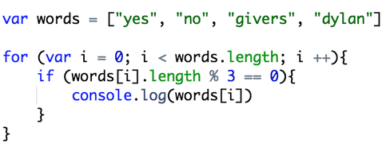
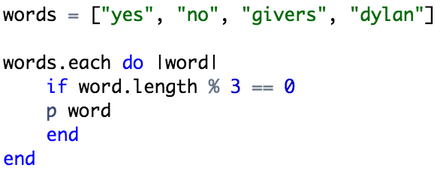

Looping in Javascript and Ruby
June 11, 2015
Thus far, except for a few sessions with Javascript in Codecademy a few months ago, my coding education has been limited to Ruby. After only a few days with Javascript, I am beginning to miss ruby for it’s simplicity and elegance. However, I am also beginning to see that the bare bones nature of Javascript, once mastered, can be liberating. To illustrate some of the fundamental differences between these two languages, lets look at some examples of looping.
Javascript

Ruby

Both of these examples are aiming to do the same thing, which is to iterate through the strings in the array and print out the ones whose length is evenly divisible by three. In this case, the strings "yes" and "givers" fit this criteria and will therefore printed to the console. What's different is the ways in which these languages go about achieving this goal. With Ruby, which has far more built in methods, we can use the each method to tell it to iterate through the array. There is no each method in Javascript, so every time you want do some sort of iteration you need to write out a for loop. This part of the for loop (var i = 0; i < words.length; i ++) is the exact same thing as the each method in Ruby, and while having to write all of this out may seem oddly labor intensive, it actually allows us to specify the way in which we want to iterate. For example, we could set i to equal 1 by doing thisvar i = 1 and have it count up by 4 by doing this i += 4. While this is not necessary for this loop, there are definitely times where this ability to customize comes in handy. In Ruby, each is built in, so if you want to iterate in another way you have to use a different method.
As you can see, there are also some syntactical differences between these two examples. For one, the arrays are defined differently. Javascript requires that we put var before we define any variable, and in Ruby we can simply type the name of the variable. Also, in order to print to the console in Javascript we use console.log, but in Ruby we can use p, print, puts, or return(which we use depends on our needs). One similarity between these two examples is the use of the length method. While Ruby certainly has more built in methods, it does share some of the same ones as Javascript, and lenghth is one of them.
I hope that was helpful. Please let me know if you have any questions.